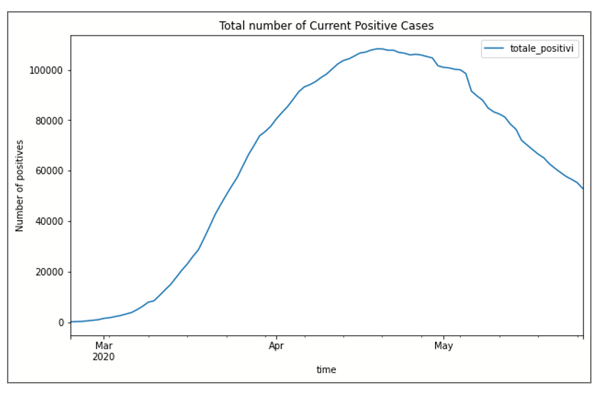
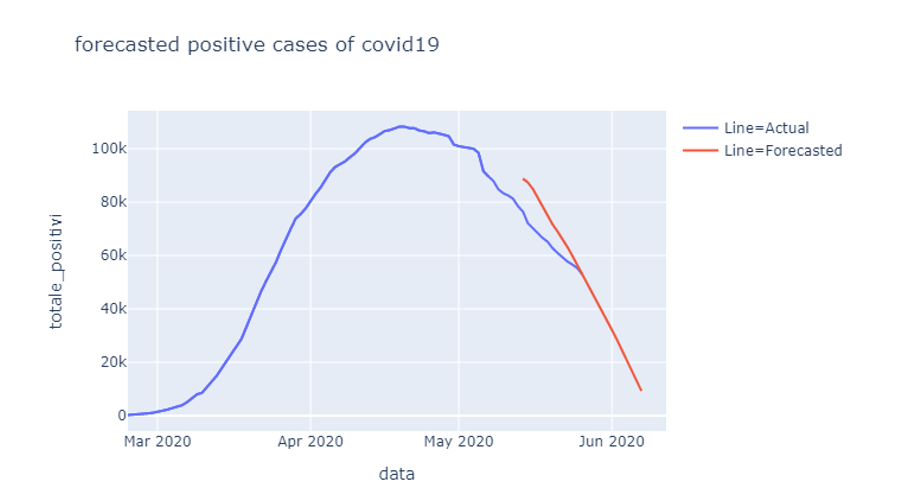
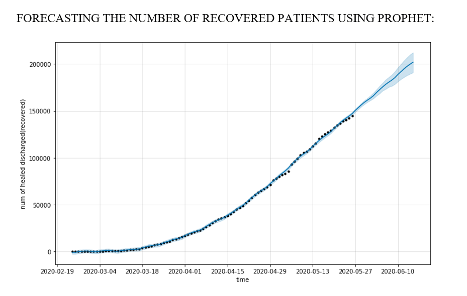

Predicting the trend of deaths, positive cases and recoveries in the future using time series (date-wise)?
The graph tells the trend of Total number of Positive Cases per day from March to May.
FORECASTING ON THE NUMBER OF POSITIVE CASES PER DAY USING AUTO ARIMA
The graph gives the forecasted trend (decreasing) of the positives cases on particular day up to June 7.

The graph shows the forecasted trend of the number of recovery cases(increasing) using Prophet. So as the patient recovery is increasing ,this is a positive prospective achieved by Italy.

As we can see in the graph we have forecasted values from 24th May to a little beyond 10th June The graph shows the forecasted trend of the number of death cases(slow increase not steep/slight increase) using Prophet.